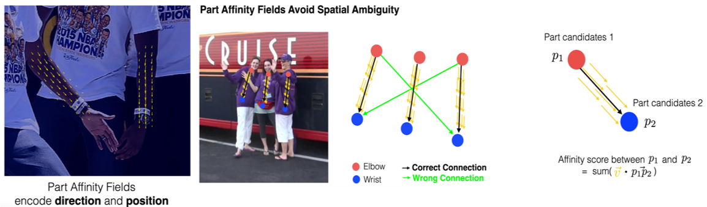
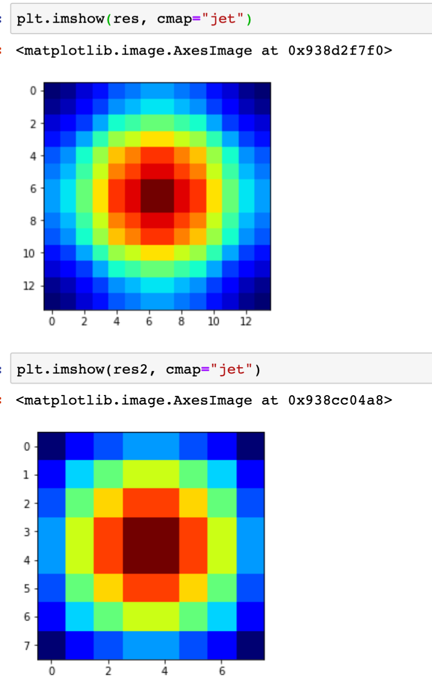
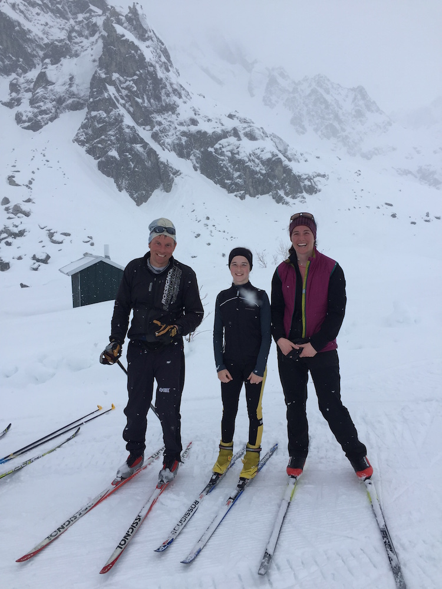
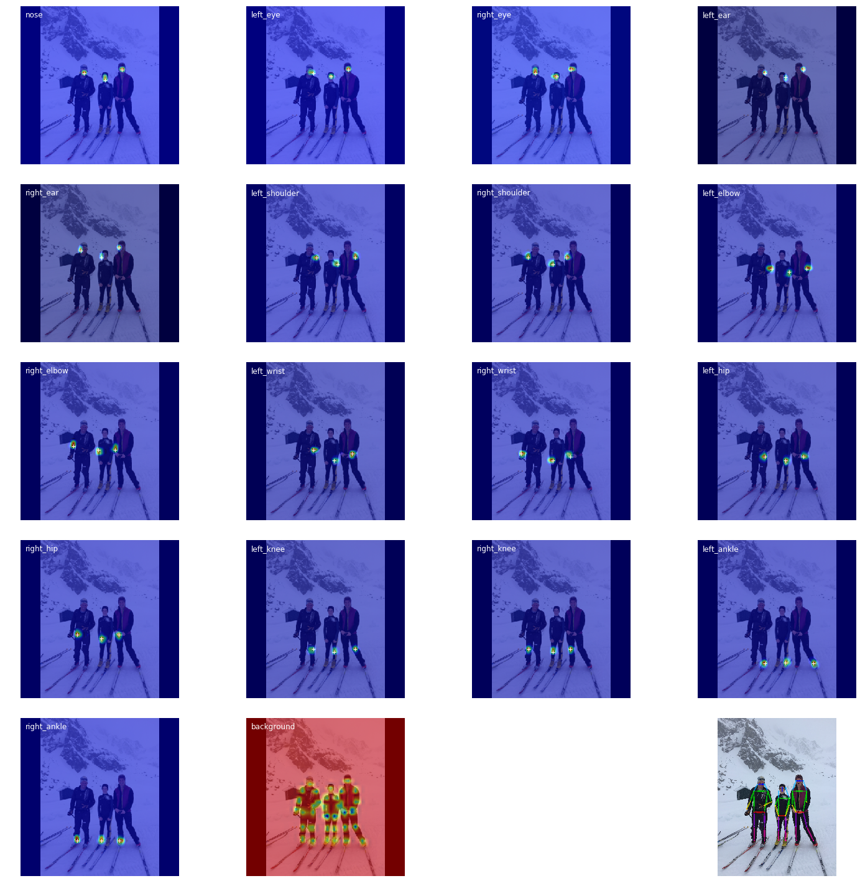
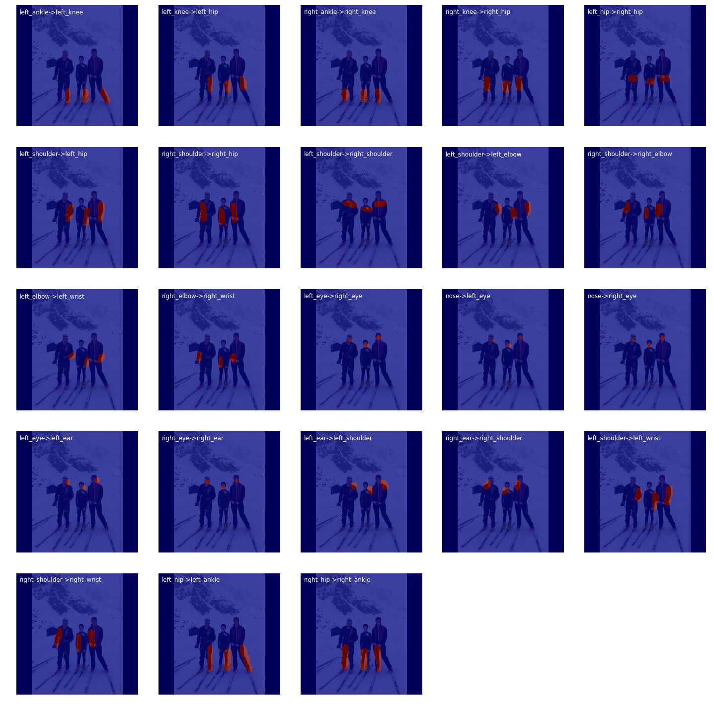
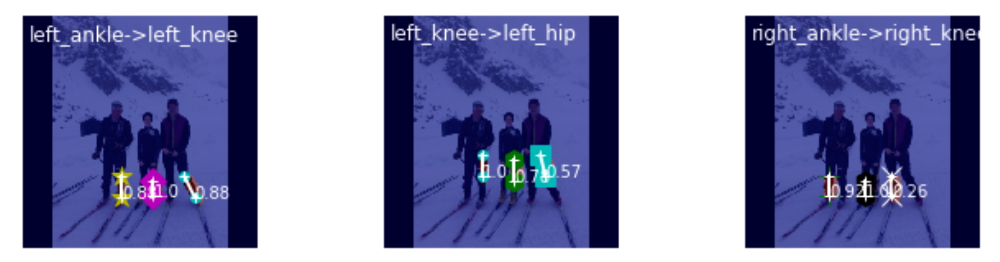
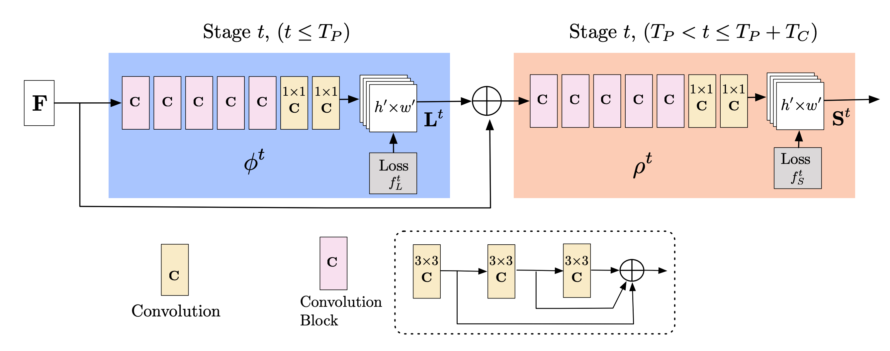

Problem Statement
- Estimate joint positions of humans in an image
- Keypoints to predict are Left Eye, Right Eye, Left Ear, Right Ear, Nose, Left Shoulder, Right Shoulder, Left Elbow, Right Elbow, Left Wrist, Right Wrist, Left Hip, Right Hip, Left Knee, Right Knee, Left Ankle, Right Ankle
Method
- Predict Heatmaps for approximate joint position
- Use Part Affinity Fields (PAF's) as guidance to link joints to form skeleton
- PAF's are just unit vectors along the limb encoding the direction of the limb
- A dot product of possible joint connection will be high if actual limb else low
- After predicting Heatmaps and PAF's, proceeed to link joints correctly (prevent cross-connections)
- Hungarian Algorithm for one-one least cost matching
- People might be at different scales in the image, perform inference at multiple scales to boost results
- Training image resolution is 368x368
- Only keypoints are provided in the dataset
- PAF's and Heatmaps need to be generated for each image, in the dataset transforms
- Dataloader (CPU resources) becomes the bottleneck for training time rather than network (GPU)
- Generate PAF's on 46x46 resolution instead of 368x368
- Pre calculate gaussian heatmap patch and paste around keypoints instead of calculating
- Network => Backbone, PAF Stages, Heatmap stages
- Freeze sections and train stage blocks, use differential learning rates

PAF's Overview

Pre-computed heatmap patches (13x13 and 7x7) to paste around joint location (x,y)
Sample Image:

Predicted Joint Heatmaps:

Predicted Part Affinity Fields (PAF's):

One - One Matching:

Network Architecture:

Results